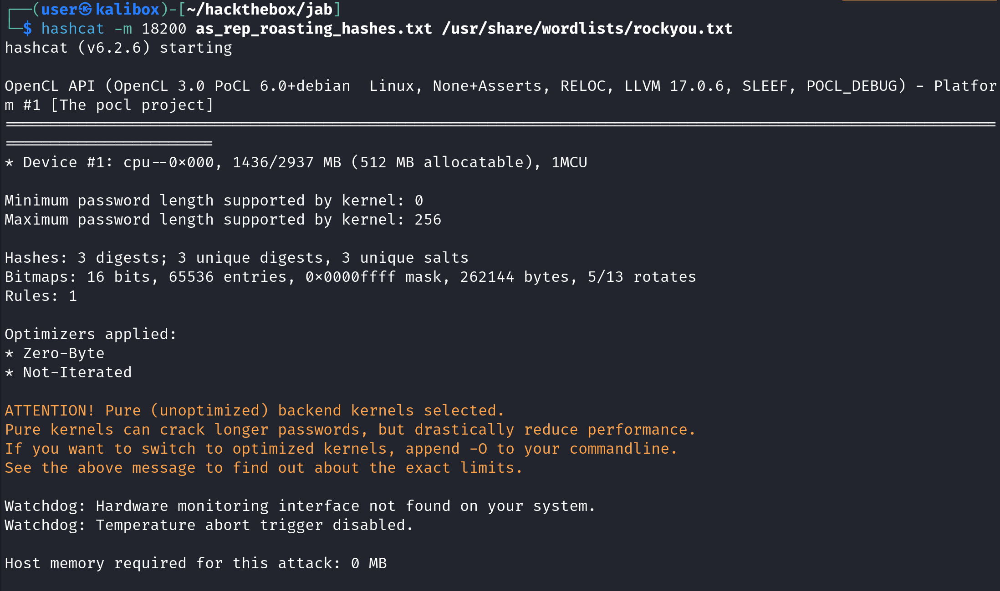

April 05, 2025
In this tutorial we will see how to perform an ASREP Roasting attack using Linux and Windows. We will first use Impacket's GetNPUsers.py on Linux and then use PowerView, SharpView, and Rubeus on Windows to dump the hashes. And lastly, we will see how to crack those hashes using hashcat.
AS-REP Roasting is a technique used in Windows Active Directory environments to extract and crack password hashes for user accounts that have Kerberos pre-authentication disabled. In a typical Kerberos authentication process, a client first sends an Authentication Service Request (AS-REQ) to the Key Distribution Center (KDC), and the KDC responds with a Ticket Granting Ticket (TGT) only after verifying the client's identity using pre-authentication. However, if pre-authentication is disabled for a user account, the KDC will respond to any unauthenticated AS-REQ with an AS-REP message that contains a portion encrypted with the user’s NTLM hash. This allows attackers to request AS-REP messages for such accounts and obtain encrypted data that can then be brute-forced offline using tools like Hashcat or John the Ripper to recover the user's password.
The danger lies in the fact that this attack does not require any credentials or elevated privileges to execute—any domain user or unauthenticated attacker (if allowed to query the KDC) can perform it. To carry out the attack, an adversary typically uses tools such as Impacket’s GetNPUsers.py script to enumerate users with the "Do not require Kerberos preauthentication" flag set and retrieve their AS-REP messages. These hashes can then be cracked offline, potentially revealing weak user passwords and enabling lateral movement or privilege escalation within the network. The best mitigation is to ensure no users—especially service accounts—have pre-authentication disabled unless absolutely necessary.
Using GetNPUsers.py, we can specify the Domain Controller's IP address (-dc-ip), the domain name "jab.htb" and the username which in our case is "lmccarty". The -request option requests the user's hash if available. It will prompt for a password, just hit enter without typing any password. We can see that this user doesn't have pre-authentication disabled.
The next user we will try is "jmontgomery". Again, hit Enter when prompted for a password. This user, however, has pre-authentication disabled. We can see the user's password hash being exposed.
Let's try a list of users to see if any of them has pre-authentication disabled.
We can pass a list of usernames by using the -usersfile option. The tool will try each username in turn to see if it has pre-authentication disabled. We can see the hashes for "jmontgomery", "lbradford", and "mlowe" users.
We can also save the hashes to a file using the -outputfile option.
This shows the file to which the hashes has been saved.
Let's use hashcat to crack these hashes. In order to crack these hashes we need to use the 18200 mode and we will use the "rockyou.txt" file to brute force the passwords. We can see that out of the three hashes, it was successful in cracking the hash for the "jmontgomery" user.
Let's say we are logged into a Windows machine and we want to see if there are any users that have pre-authentication disabled. We can use PowerView to dump the hashes but first we will have to import the PowerView module.
Now that PowerView is imported, we can use the Get-DomainUser cmdlet and pass "DONT_REQ_PREAUTH" to the -UACFilter option. It shows that the "D.Klay" user has pre-authentication disabled.
We can do the same thing with SharpView.
Now that we know that there is a user who has pre-authentication disabled, we can start dumping the user's hash. We will be using Rubeus for that. The /user option takes the username, the /domain option takes the domain name and the /dc option takes the domain controller name. The /nowrap flag causes the output to not wrap per line.
We can also save the hash to a file using the /outfile option.
It shows that the hash has been saved to the file. Now we can proceed on to cracking the hash using hashcat.
If you liked reading this article, you can follow me on Twitter: 0xmaCyberSec.